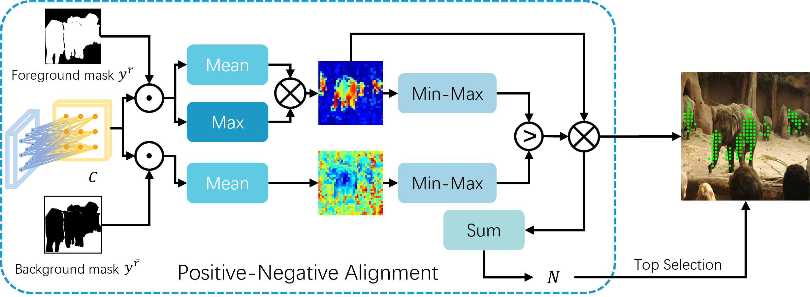
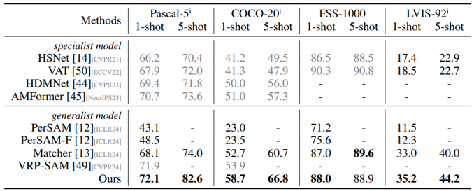
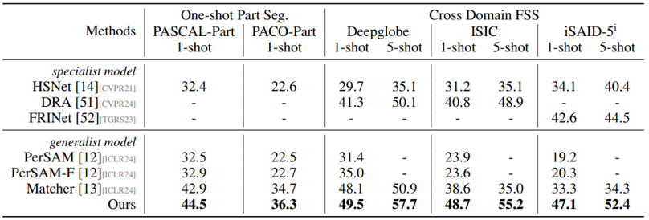

Positive-Negative Alignment for Point Selection
The PNA module efficiently selects point prompts to balance the number of points and coverage of target objects.
The recent advancements in large-scale pre-training techniques have significantly enhanced the capabilities of vision foundation models, notably the Segment Anything Model (SAM), which can generate precise masks based on point and box prompts. Recent studies extend SAM to Few-shot Semantic Segmentation (FSS), focusing on prompt generation for SAM-based automatic semantic segmentation. However, these methods struggle with selecting suitable prompts, require specific hyperparameter settings for different scenarios, and experience prolonged one-shot inference times due to the overuse of SAM, resulting in low efficiency and limited automation ability.
To address these issues, we propose a simple yet effective approach based on graph analysis. In particular, a Positive-Negative Alignment module dynamically selects the point prompts for generating masks, especially uncovering the potential of the background context as the negative reference. Another subsequent Point-Mask Clustering module aligns the granularity of masks and selected points as a directed graph, based on mask coverage over points. These points are then aggregated by decomposing the weakly connected components of the directed graph in an efficient manner, constructing distinct natural clusters. Finally, the positive and overshooting gating, benefiting from graph-based granularity alignment, aggregate high-confident masks and filter out the false-positive masks for final prediction, reducing the usage of additional hyperparameters and redundant mask generation. Extensive experimental analysis across standard FSS, One-shot Part Segmentation, and Cross Domain FSS datasets validate the effectiveness and efficiency of the proposed approach, surpassing state-of-the-art generalist models with a mIoU of 58.7% on COCO-20i and 35.2% on LVIS-92i.
The PNA module efficiently selects point prompts to balance the number of points and coverage of target objects.
Compare number of positive and negative pixels according to positive and negative similarity maps.
Retain points having highest similarity on regions of its corresponding mask (with distance factor).
To illustrate the Few-shot Semantic Segmentation ability and generalization capacity, we conduct three types of sub-tasks, i.e. standard Few-shot Semantic Segmentation, One-shot Part Segmentation, and Cross Domain Few-shot Semantic Segmentation.
Datasets: Pascal-5i, COCO-20i, FSS-1000, and LVIS-92i
Datasets: PASCAL-Part and PACO-Part; Deepglobe, ISIC2018, and iSAID-5i
@inproceedings{zhang2024bridge,
title={Bridge the Points: Graph-based Few-shot Segment Anything Semantically},
author={Zhang, Anqi and Gao, Guangyu and Jiao, Jianbo and Liu, Chi Harold and Wei, Yunchao},
journal={NeurIPS},
year={2024}
}